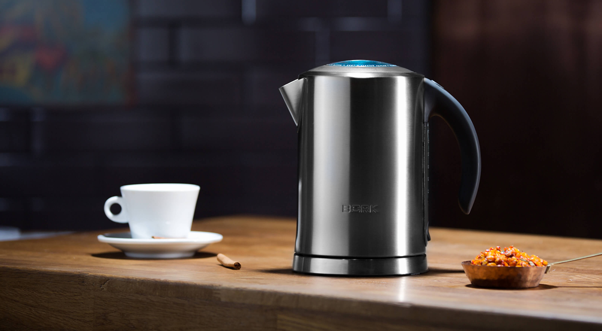
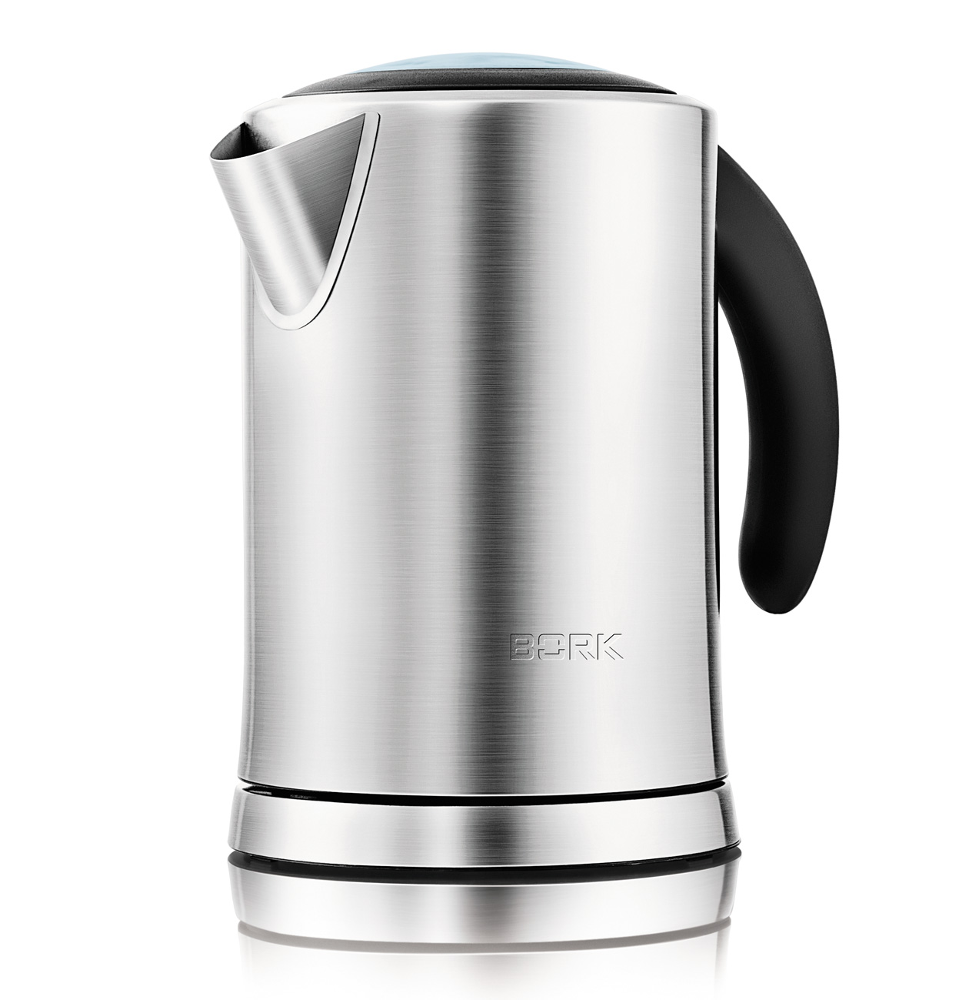
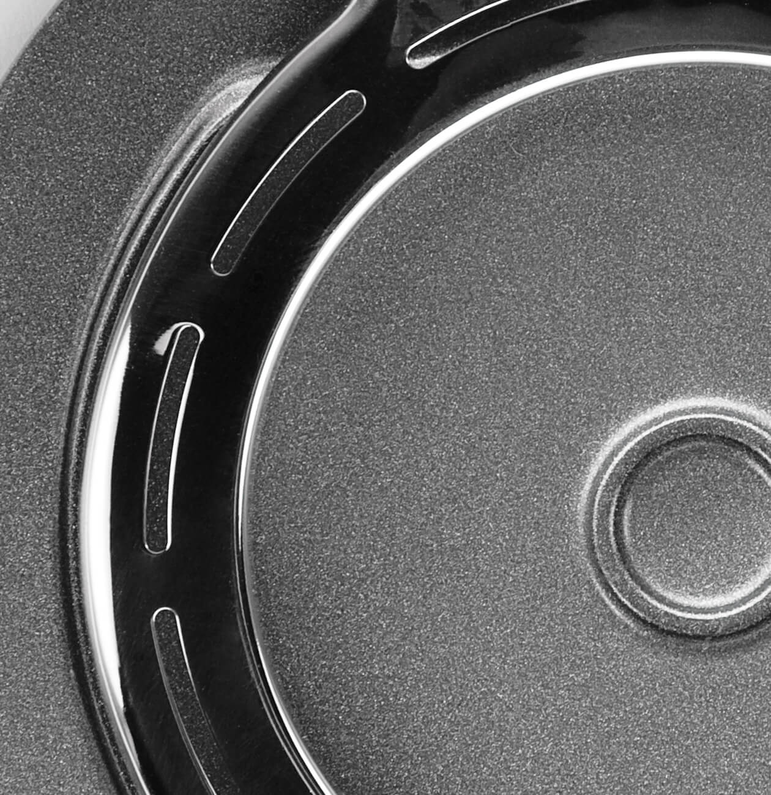
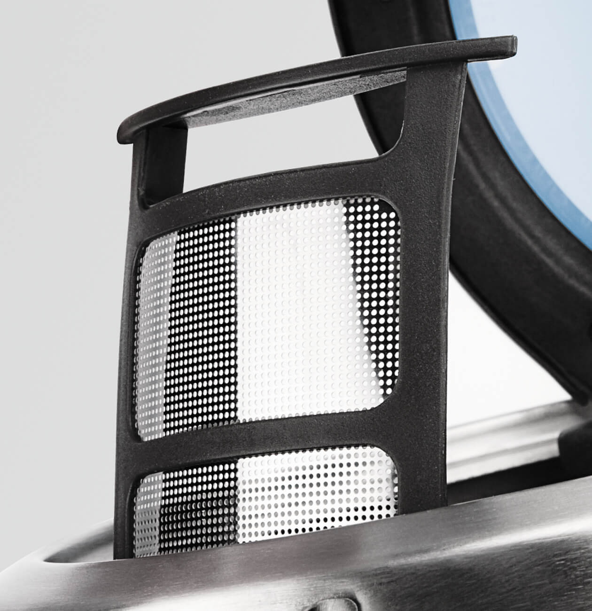
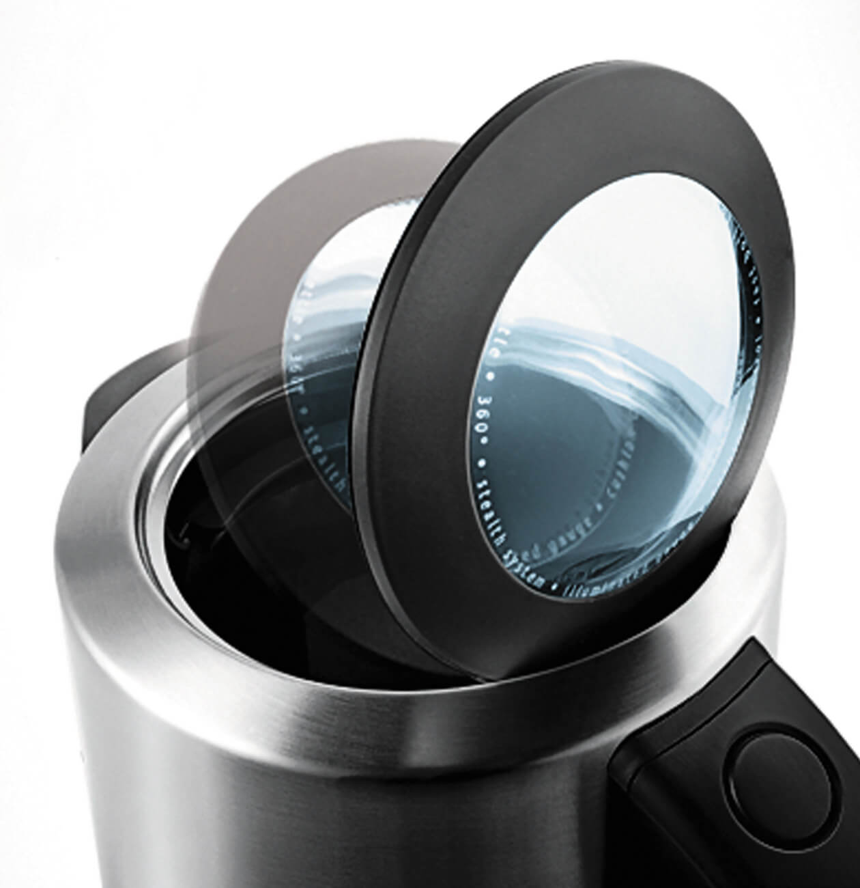
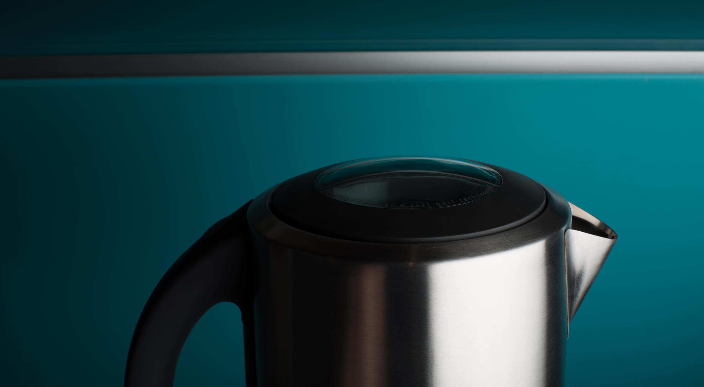
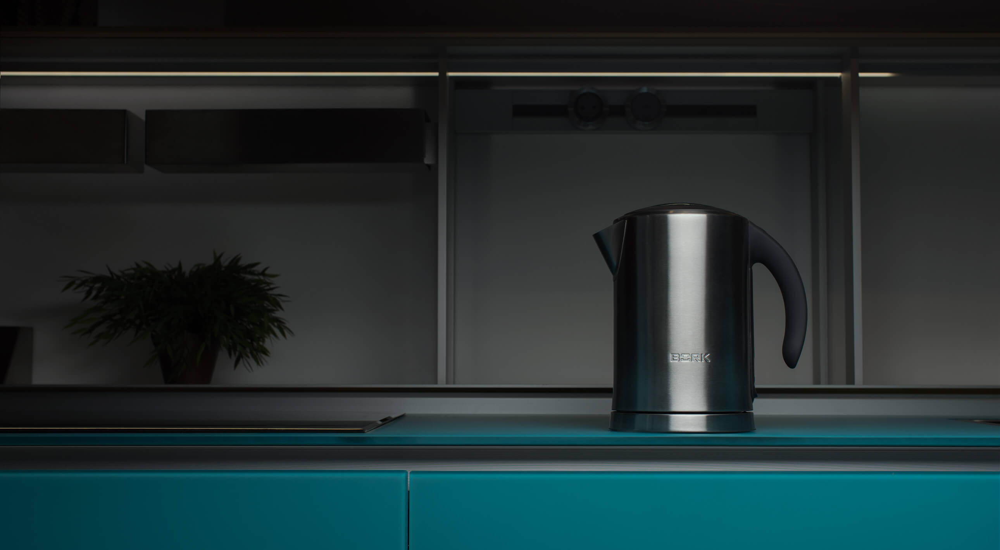

Чайник К711
Классическая модель в стильном металлическом корпусе.
Стальной металлический корпус
Колба чайника из нержавеющей стали отличается прочностью и долговечностью. В сочетании с хромированной ручкой эта модель в стальном корпусе станет идеальным дополнением интерьера вашей кухни.
Технология тихого кипячения STEALTH
В чайнике использована инновационная технология Stealth. Недостатком любого металлического чайника является высокий уровень шума, чайник BORK К711 работает тише, благодаря кольцевому диффузору. Для профилактики технологии Stealth необходимо регулярно удалять накипь, которая может влиять на работу и срок службы чайника.
Съемный металлический фильтр
Фильтр обеспечивает качественную защиту от попадания накипи при наливании воды из чайника, а благодаря высокой износостойкости материала сохраняет свои свойства на долгие годы.
Продуманная конструкция
Плавное открывание крышки гарантируют безопасность и удобство использования. Эта технология исключает разбрызгивание горячей воды при открывании чайника. В сочетании со звуковой индикацией и подсветкой шкалы для воды, этот элемент продуманной конструкции делает использование чайника максимально комфортным. Большой диаметр крышки позволяет удобно заливать воду и при желании промыть чайник.
Лёгкое и безопасное наливание
Идеальный угол наклона носика обеспечивает равномерную подачу воды, не образуя подтёков по корпусу и избегая пролива мимо чашки.
Контактная группа Strix

Strix уже давно зарекомендовал себя на рынке - основные преимущества заключаются в следующем:
- Полный набор защитных механизмов, которые обеспечивают максимальную безопасность при использовании чайников. Есть и отключение при перегреве нагревательного элемента, и защита скачков напряжения, а также - отключение, если чайник снимается до закипания.
- Конструкция контактных групп позволяет реализовать вращение чайника на подставке на 360 градусов, чтобы и правша, и левша мог использовать чайник с одинаковым удобством.
- Контактная группа Strix, рассчитана на 3 000 000 закипаний воды в чайнике
- Максимальная погрешность температур ± 3 ˚ С, такая точность, позволяет полностью раскрыть аромат и вкус, каждого из завариваемого чая.
Технические характеристики

Мощность 2000-2400 Вт
Объём 0,5 л - 1,7 л
Материал корпуса Нержав. cталь
Срок гарантии 1 год
Фильтр от накипи Есть
Автоотключение Есть
Звуковые сигналы Есть
Отключение без воды Есть
Плавное открывание крышки Есть
Нагревательный элемент Скрытый
Контакт с базой 360°
Длина кабеля 1,05 м
Вес 1,5 кг
Тип управления Механическое
Страна производства Китай